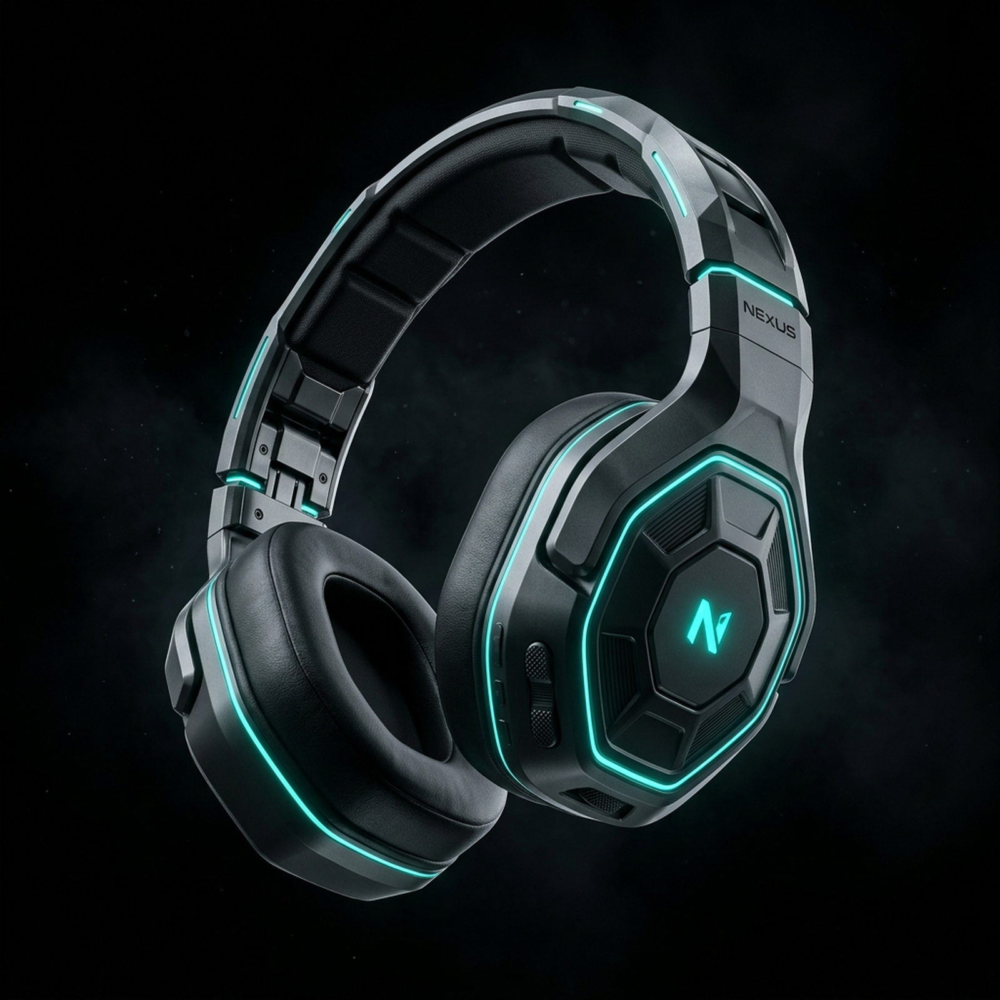

Audio Engine & Stem Alerts
Spot unusual frequency spikes, duplicate rhythms, and mix drift before exporting the final cue.
Instant cues
36

A live diagnostic workspace for stem control, arrangement, mix policy, and audio signals across every track.
Spot unusual frequency spikes, duplicate rhythms, and mix drift before exporting the final cue.
Parse reference tracks, stems, and MIDI events into clean sessions with genre confidence scoring.
Track frequency movement, LUFS velocity, and dynamic variance from one live master channel.
Mira Keane
Session 04
LUMA
Create sessions, bind plugin rules, cap track count by project, and manage CPU exposure in real time.
Arrangement Diagnostic
A minimalist diagnostic view for inspecting audio pathways, arrangement layers, stem channels, and generation events across your active timeline.
Stems
24
Latency
12ms
Tracks
8
Fidelity
99.9%
Inspection Note
The composition engine is operating within tolerance. Two secondary stems were regenerated after structural pressure crossed the complexity threshold. Ready for export.
Integrate directly with your favorite DAWs. Drag and drop generated cues, stems, and MIDI sequences straight into your arrangement window.
Describe the emotional arc, tempo, and instrumentation using natural language or structured tags.
Preview multiple variations. Adjust intensity, swap stems, or regenerate specific 8-bar loops instantly.
Drag full mixes, wet/dry stems, and MIDI data directly into Pro Tools, Logic, Ableton, or Premiere.
Native Export Destinations
See how top composers, audio directors, and post-production teams use LumaLoop to scale their scoring pipeline without compromising on fidelity.
"LumaLoop completely changed our post-production pipeline. What used to take three days of temp-scoring now takes four hours, and the exported stems drop flawlessly into Pro Tools."
Lead Composer, A24
"The ability to prompt for emotional arcs and instantly receive a 32-bar cue with separated stems is simply magic. It's not just a toy, it's a diagnostic workspace for serious arrangements."
Audio Director, Riot
"I was skeptical of generative ai for scoring, but LumaLoop is different. The mix analytics and the native Ableton exports make it a natural extension of my current studio rig."
Independent Producer
Transparent pricing for studios of all sizes. From solo producers to enterprise post-houses.
For independent creators and solo devs.
For professional producers and small teams.
For large post-houses and gaming studios.
Join the waitlist to get early access to LumaLoop and transform your creative workflow.